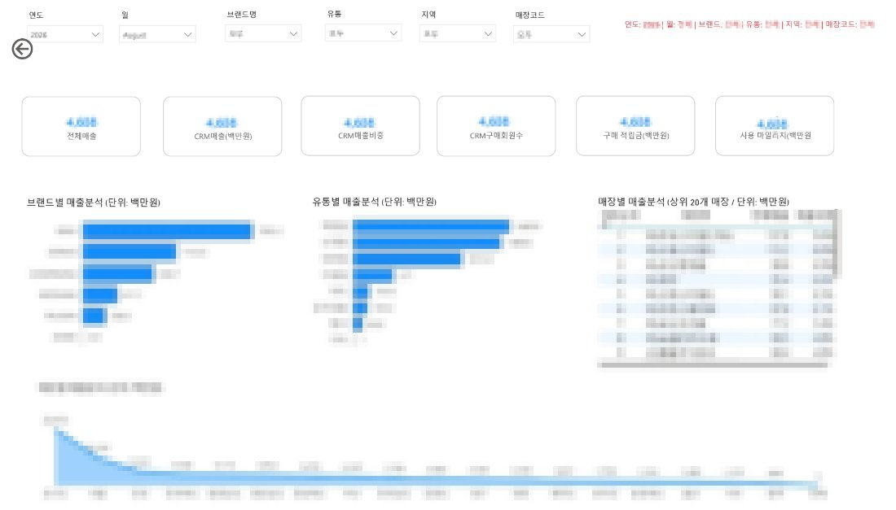

임보라PROJECT 01·BI · 확산
반복 자료 요청을 Power BI 셀프 조회로 바꿨습니다.
문제1인 CRM에 반복 추출 요청이 집중
방법지표 기준 정리 + Power BI 조회 화면 구축
결과현업이 직접 조회, 분석·자동화에 쓸 시간 확보
PROJECT 01 · SQL · Power BIPower BI 셀프 조회
| 조회 필터 | 6개 |
|---|---|
| 대상 중복·누락 | 0건 |
| 연결 DB | SQL Server |

수치·매장명 모자이크진행 방식
- 반복 요청 지표·집계 기준 정리
- SQL Server 연결 조회 화면 구축
- 브랜드·지역·매장 필터와 사용 기준 공유
어떻게 진행했나
CRM 팀장 퇴사 후 전사 CRM을 혼자 맡았습니다. 회원·매출 자료를 매번 엑셀로 집계하면 분석과 캠페인 기획에 쓸 시간이 줄었습니다.
이후
- 반복 집계가 줄어 고객 분석, 업무 자동화, 시스템 개선 과제를 병행할 수 있는 기반 마련